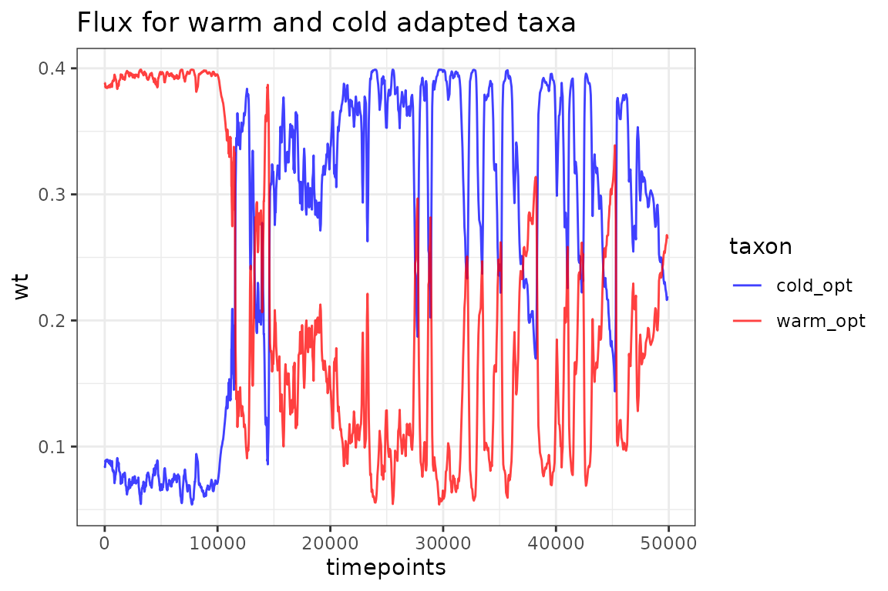

Effect of climate dependent flux.
Andrew M. Dolman
2025-06-15
Source:vignettes/effect-of-climate-dependent-flux.Rmd
effect-of-climate-dependent-flux.Rmd
knitr::opts_chunk$set(echo=TRUE, message = FALSE, warning = FALSE,
fig.width = 6, fig.height = 4)Introduction
In this example we show how sedproxy can be used to reproduce the study of Löwemark et al 2008, which illustrates the effect of climate dependent changes in the flux of foraminifera on the resulting proxy record.
In brief, they create pseudo-proxies from a rescaled version of the GISP2 Greenland ice-core d18O record. They compare the records for 2 different hypothetical foraminifera: 1 that has its optimum temperature close to the maximum temperature in the record, and so its flux declines as temperatures drop; and a second that has its optimum near the lowest temperatures in the record and whose flux increases as temperature drops.
Step change input climate
They first use a very simple step-change climate to show the effect of changes in the flux of foraminifera on the recovery of this step in a proxy record.
Löwemark et al. compare warm optimum and cold optimum taxa, and additionally one whose flux is not influenced by temperature. They also compare 4 different levels of sediment mixing. They keep the sedimentation rate constant and vary the mixing depth, we will keep the mixing depth fixed at 10 cm and vary the sedimentation rate.
We will use functions from the dplyr and tidyr packages to run the forward model for a combination of experimental setups with different parametrisation.
# setup a data.frame/tibble where each row represents 1 pseudo-proxy
expts.fig1 <- crossing(
SAR = c(6.66, 10, 20, 50),
taxon = c("warm_opt", "constant", "cold_opt")
)
expts.fig1## # A tibble: 12 × 2
## SAR taxon
## <dbl> <chr>
## 1 6.66 cold_opt
## 2 6.66 constant
## 3 6.66 warm_opt
## 4 10 cold_opt
## 5 10 constant
## 6 10 warm_opt
## 7 20 cold_opt
## 8 20 constant
## 9 20 warm_opt
## 10 50 cold_opt
## 11 50 constant
## 12 50 warm_optCreate a matrix of habitat.weights for each taxon. Löwemark et al set the flux to 100 and 10 for optimal and suboptimal conditions respectively. In sedproxy the absolute values don’t matter, only the relative values as they are normalised and use a weights.
warm_opt.wts <- ifelse(clim.in == 1, 100, 10)
cold_opt.wts <- ifelse(clim.in == 2, 100, 10)
# set these weights constant
no.wts <- clim.in
no.wts[,] <- 1The stochastic term in the forward model all default to zero variance so we only need to set the clim.signal, timepoints, habitat.weights, and sedimentation rate. The bioturbation depth defaults to 10 cm.
results.fig1 <- expts.fig1 %>%
group_by(SAR, taxon) %>%
# create a pseudo-proxy for each combination of SAR and taxon
do({
PFM <- ClimToProxyClim(
clim.signal = clim.in,
timepoints = timepoints,
# the function switch can be used to select the correct habitat weights
# depending on the value of taxon
# within a do() call, columns of the dataframe are accessed
# using .$
habitat.weights = switch(.$taxon,
warm_opt = warm_opt.wts,
cold_opt = cold_opt.wts,
constant = no.wts),
sed.acc.rate = .$SAR)
# the last expression in do() should create or access a data.frame.
# One dataframe will be created for each combination of SAR and taxon,
# these are then combined together at the end.
PFM$simulated.proxy
}) %>%
ungroup() %>%
mutate(
# convert taxon and SAR to factors for plotting
SAR = factor(SAR),
taxon = factor(taxon, ordered = TRUE,
levels = c("constant", "cold_opt", "warm_opt")))Plot the results as in Löwemark Fig.1 using ggplot.
results.fig1 %>%
ggplot(aes(x = timepoints, y = simulated.proxy,
colour = SAR, group = SAR)) +
geom_line() +
coord_flip() +
scale_x_reverse() +
facet_wrap(~taxon) +
labs(title = "Step change climate input")GISP2
In Fig. 2, Löwemark et al apply their model to a rescaled version of the GISP2 d18O Greenland ice core record.
We can do this with sedproxy by passing the rescaled GISP2 record as the climate signal. A rescaled version of GISP2 is included in the sedproxy package
Foram flux as habitat.weights
Create habitat weights as function of climate matrix for 2 nominal taxa, 1 with warm temperature optimum, 1 with cold.
If we assume a simple Gaussian temperature response where a taxon has
maximum abundance or flux at a certain optimum temperature and then
declines in abundance away from this with we can use dnorm
with optimum temperature as the mean. The standard deviation controls
how steeply abundance drops off away from this optimum.
wts <- tibble(timepoints = as.numeric(time(clim.in.gisp)),
warm_opt = dnorm(clim.in.gisp, -2, 1),
cold_opt = dnorm(clim.in.gisp, -0, 1))
wts.long <- wts %>%
gather(taxon, wt, -timepoints)
wts.long %>%
ggplot(aes(x = timepoints, y = wt, colour = taxon)) +
geom_line(alpha = 0.75)+
scale_color_manual(
values = c("cold_opt" = "blue",
"warm_opt" = "red")) +
theme_bw() +
labs(title = "Flux for warm and cold adapted taxa")
Run the proxy forward model
Here use Base R for those unfamiliar with dplyr, tidyr and the pipe (%>%)
pfm.warm <- ClimToProxyClim(clim.signal = clim.in.gisp,
timepoints = timepoints,
habitat.weights = wts$warm_opt,
sed.acc.rate = 10)
pfm.cold <- ClimToProxyClim(clim.signal = clim.in.gisp,
timepoints = timepoints,
habitat.weights = wts$cold_opt,
sed.acc.rate = 10)
# Access the bits we want to plot
warm_opt <- pfm.warm$simulated.proxy
warm_opt$taxon <- "warm_opt"
cold_opt <- pfm.cold$simulated.proxy
cold_opt$taxon <- "cold_opt"
pfm.warm.cold <- rbind(warm_opt, cold_opt)Plot with ggplot
pfm.warm.cold %>%
ggplot(aes(x = timepoints, y = simulated.proxy, colour = taxon)) +
geom_line() +
# add the original climate signal
geom_line(data = gisp2.ann,
aes(x = age.yr.bp, y = temperature.rescaled,
colour = "gisp2"), linetype = 1) +
# reverse the y axis so that warm is up
scale_y_reverse() +
scale_color_manual(
values = c("cold_opt" = "blue",
"warm_opt" = "red",
"gisp2" = "Darkgrey")) +
theme_bw() +
labs(title = "Rescaled GISP2 with pseudo-proxies from warm and cold adapted taxa")Here the above is repeated using the “tidyverse” style. This allows us to very easily add additional experiments via the expts table. Here we repeat at a higher sedimentation rate.
# Experimental setup
expts.gisp <- crossing(
SAR = c(10, 50),
taxon = c("warm_opt",
"cold_opt")
)
# call ClimToProxyClim for each taxon
results <- expts.gisp %>%
group_by(SAR, taxon) %>%
do({
ClimToProxyClim(clim.signal = clim.in.gisp,
timepoints = timepoints,
# use switch to pick the correct weights
habitat.weights = switch(.$taxon,
warm_opt = wts$warm_opt,
cold_opt = wts$cold_opt),
sed.acc.rate = .$SAR)$simulated.proxy
}) %>%
ungroup() %>%
mutate(SAR = factor(SAR),
# convert taxon to factor for plotting
taxon = factor(taxon, ordered = TRUE,
levels = c("none", "cold_opt", "warm_opt")))
results %>%
ggplot(aes(x = timepoints, y = simulated.proxy, colour = taxon)) +
geom_line() +
# add the original climate signal
geom_line(data = gisp2.ann, aes(x = age.yr.bp, y = temperature.rescaled,
colour = "gisp2"), linetype = 1) +
scale_y_reverse() +
scale_color_manual(values = c("cold_opt" = "blue", "warm_opt" = "red",
"gisp2" = "Darkgrey")) +
facet_wrap(~SAR, ncol = 1, labeller = label_both) +
theme_bw()